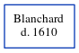

Blanchard - 1610
[
Home
] | [
Calendar
] | [
Surnames Index
] | [
Census Index
] | [
Family History
]
Blanchard Blanchard
.
He died in 1610.
Family Tree

Generated by
ged2site
. Last updated on Jun 6, 2024